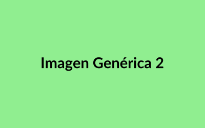
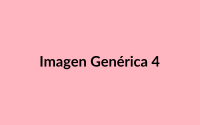

Plataforma Integral de Comercio Electrónico para Gran Empresa

Desarrollo de una solución completa de e-commerce para una gran empresa, incluyendo catálogo extenso, integración con sistemas ERP, múltiples métodos de pago y soporte para alta concurrencia de usuarios.
(+).
Sitio Web Corporativo

Diseño y desarrollo de un sitio web atractivo y profesional que potencia la presencia online de pequeñas empresas, facilitando la conexión con clientes potenciales y destacando sus servicios de manera clara y efectiva, todo optimizado para una experiencia impecable
(+).